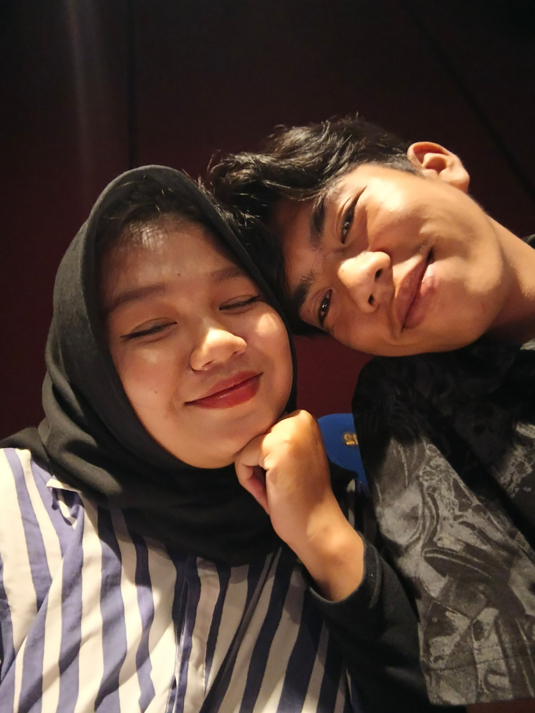
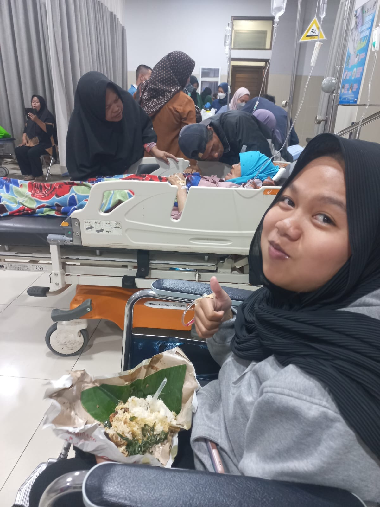
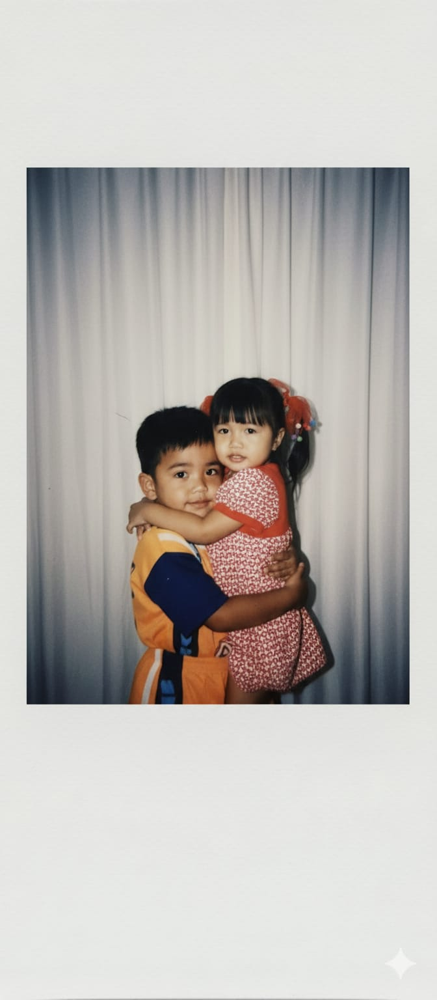
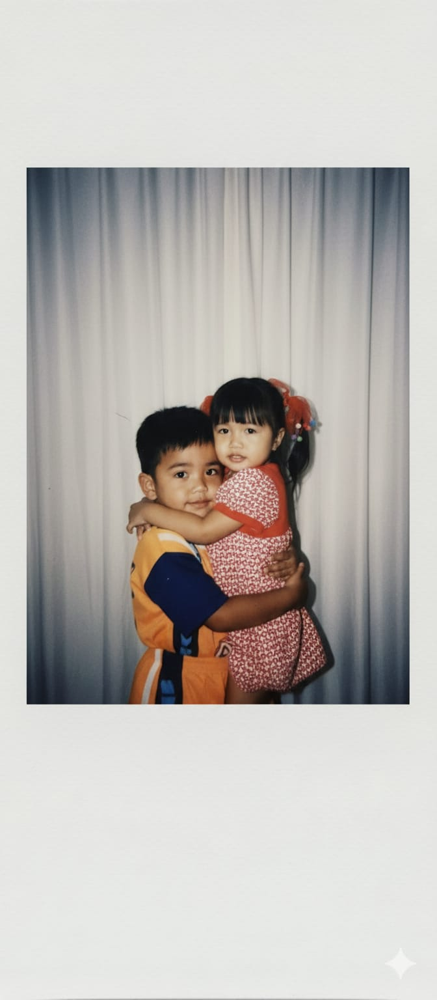

Seperti kapal Going Merry yang terus berlayar, kita juga berlayar bareng — meski ombaknya kadang tinggi, tapi tujuannya tetap sama.
  

Dan kalaupun kapal kita nanti berhenti, aku tetap bersyukur pernah jadi bagian dari pelayaran ini ⚓